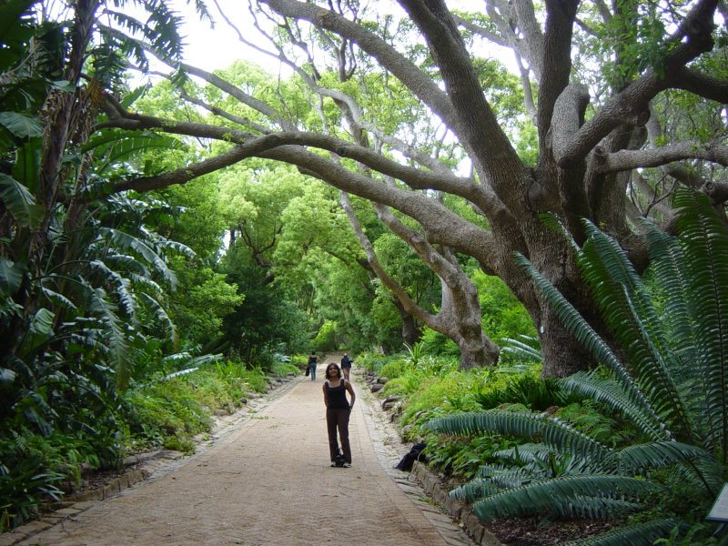

Today is my birthday!
Had breakfast in our hotel at 8:30am. Left for Table Mountain cable car at about 9:30am.
Cable car which has a revolving floor takes about 5 minutes or so to get to the top.
The top of the mountain was covered in cloud and very cold and windy although it cleared later on.
We spent an hour or so looking for dassies but were disappointed. We spotted some small birds with very long beaks curved downwards. There is also a large variety of plants, in particular heathers.
We took a guided tour at 12:00pm. The tour guides were very interesting, apparently the dassies are much rarer now. The guides had not seen any for several weeks and speculated that this maybe because of the fires or because of tourists feeding them.
The clouds cleared and we then got some great views of Cape Town.
We then drove to Mount Nelson for afternoon tea. Arrived 1:30pm. Afternoon tea begins at 2:30pm.
Had a coffee while waiting. Outstanding selection of cakes and sandwiches to go with our tea! It is all done as a buffett so you can hone in on the cakes of your choice. Cost was just 100R each (about �7.00).
We then drove to Kirstenbosch gardens which are lovely with a spectacular backdrop of the mountains. Unfortunately the heavens opened up and we got soaked.
In the evening we went to Five Flies for dinner. We had a bottle of Klein Constantia Rhine Riesling 2006 (165R) which was rather bland (maybe some celery?), acidic.
My starter was asparagus with a nice light sauce and peas, which was good.
Yamini had beef carpacio with parmesan and caper sauce - very nice.
My main course was springbok with prickly pear jus and mashed gem squash - perfectly cooked slivers of meat and rather generous as well, sauce was lovely.
Yamini had slow roasted duck with oriental jus which was very nice.
I had traditional malva pudding with caramel and ice cream for dessert - lovely!
Yamini had creme brulee with vanilla pod flavoured icecream.
Had a glass of Constantia dessert wine which was gorgeous, slightly orangey we thought.
Bill came to 630 R (approx �50)
Caught a taxi back to hotel…
{kind=link}